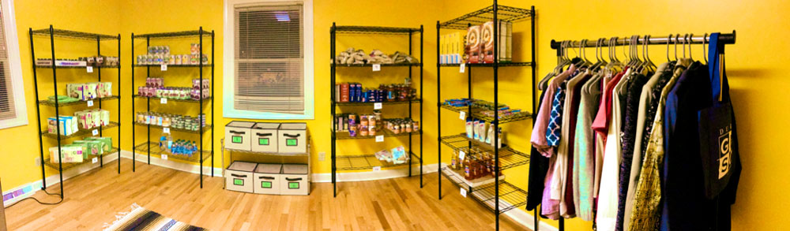

Introduction
Duke’s Graduate and Professional Student Government (GPSG) has been operating a community food pantry for about five years. The pantry provides nonperishable food and basic need items to graduate and professional students on campus. There is a weekly bag program, where students order customized bags of food to be picked up on Saturdays, as well as an in-person shopping program open on Thursdays and Saturdays.
Figure 1: Weekly number of customers at the Pantry. The black line is a moving average of weekly visits.
The weekly bag program, which began in May 2018 and is still the most popular pantry offering, provides quite a bit of data regarding pantry customers and their habits. Some customers have ordered more than 80 times in the past 2 years, while others only ordered once or twice. For every bag order, we have the customer’s first name and last initial, an email address (which became mandatory around mid 2018), a phone number in a few cases, an address in some cases (for delivery), we have demographic information some cases, and we have the food order information. Available quasi-identifying information is shown in Table 1 below.
| Question no. | Question | Answer form | Mandatory? |
|---|---|---|---|
| - | IP address | - | Yes |
| 2 | First name and last initial | Free form | Yes |
| 3 | Duke email | Free form | Yes |
| 4 | Phone number | Free form | No |
| 6 | Address | Free form | No |
| 8 | Food allergies | Free form | No |
| 9 | Number of members in household | 1-2 or 3+ | Yes |
| 10 | Want baby bag? | Yes or no | Yes |
| 30 | Degree | Multiple choices or Other | No |
| 31 | School | Multiple choices or Other | No |
| 32 | Year in graduate school | Multiple choices | No |
| 33 | Number of adults in household | Multiple choices | No |
| 34 | Number of children in household | Multiple choices | No |
Gaining the most insight from this data requires linking order records from the same customer. Identifying individual customers and associating them with an order history allows us to investigate shopping recurrence patterns and identify potential issues with the pantry’s offering. For instance, we can know who stopped ordering from the pantry after the home delivery program ended. These are people who, most likely, do not have a car to get to the pantry but might benefit from new programs, such as a ride-share program or a gift card program.
This blog post describes the way in which records are linked at the Community Pantry. As we will see, the record linkage problem is not particularly difficult. It is not trivial either, however, and it does require care to ensure that it runs reliably and efficiently, and that it is intelligible and properly validated. This post goes in detail into these two aspects of the problem.
Regarding efficiency and reliability of the software system, I describe the development of a Python module, called GroupByRule, for record linkage at the pantry. This Python module is maintainable, documented and tested, ensuring reliability of the system and the potential for its continued use throughout the years, even as technical volunteers change at the pantry. Regarding validation of the record linkage system, I describe simple steps that can be taken to evaluate model performance.
Before jumping into the technical part, let’s take a step back to discuss the issue of food insecurity on campus.
Food Insecurity on Campus
It is often surprising to people that some Duke students might struggle having access to food. After all, Duke is one of the richest campuses in the US with its 12 billion endowment, high tuition and substantial research grants. Prior to the covid-19 pandemic, this wealth could be seen on campus and benefit many. Every weekday, there were several conferences and events with free food. Me and many other graduate students would participate in these events, earning 3-4 free lunches every week. Free food on campus is now a thing of the past, for the most part.
However, free lunch or not, it’s important to realize the many financial challenges which students can face. International students on F-1 and J-1 visas have limited employment opportunities in the US. Many graduate students are married, have children or have other dependents which may not be eligible to work in the US either. Even if they are lucky enough to be paid a 9 or 12-month stipend, this stipend doesn’t go very far. For other students, going to Duke means living on a mixture of loans, financial aid, financial support from parents, and side jobs. Any imbalance in this rigid system can leave students having to compromise between their education and their health.
A 2019 study from the World Food Policy Center reported that about 19% of graduate and professional students at Duke experienced food insecurity in the past year. This means they were unable to afford a balanced and sufficient diet, they were afraid of not having enough money for food, or they skipped meals and went hungry due to lack of money. The GPSG Community Pantry has been leading efforts to expand food insecurity monitoring on campus – we are hoping to have more data in 2022 and in following years.
The Record Linkage Approach
The bag order form contains email addresses which are highly reliable for linkage. If two records have the same email, we know for certain that they are from the same customer. However, customers do not always enter the same email address when submitting orders. Despite the request to use a Duke email address, some customers use personal emails. Furthermore, Duke email addresses have two forms. For instance, my duke email is both ob37@duke.edu and olivier.binette@duke.edu. Emails are therefore not sufficient for linkage. Phone numbers can be used as well, but these are only available for the period when home delivery was available.
First name and last initial can be used to supplement emails and phone numbers. Again, agreement on first name and last initial provides strong evidence for match. On the other hand, people do not always enter their names in the same way.
Combining the use of emails, phone numbers, and names, we may therefore link records which agree on any one of these attributes. This is a simple deterministic record linkage approach which should be reliable enough for the data analysis use of the pantry.
Deterministic Record Linkage Rule
To be more precise, record linkage proceeds as follows:
Records are processed to clean and standardize the email, phone and name attributes. That is, leading and trailing whitespace are removed, capitalization is standardized, phone numbers are validated and standardized, and punctuation is removed from names.
Records which agree on any of their email, phone or name attributes are linked together.
Connected components of the resulting graph are computed in order to obtain record clusters.
This record linkage procedure is extremely simple. It relies the fact that all three attributes are reliable indicators of a match and that, for two matching records, it is likely that at least one of these three attributes will be in agreement.
Also, the simplicity of the approach allows the use of available additional information (such as IP address and additional questions) for model validation. If the use of this additional information does not highlight any flaws with the simple deterministic approach, then this means that the deterministic approach is already good enough. We will come back to this when discussing model validation techniques.
Implementation
Our deterministic record linkage system is implemented in Python with some generality. The goal is for the system to be able to adapt to changes in data or processes.
The fundamental component of the system is a LinkageRule class. LinkageRule objects can be fitted to data, providing either a clustering or a linkage graph. For instance, a LinkageRule might be a rule to link all records which agree on the email attribute. Another LinkageRule might summarize a set of other rules, such as taking the union or intersection of their links.
The interface is as follows:
from abc import ABC, abstractmethod
class LinkageRule(ABC):
"""
Interface for a linkage rule which can be fitted to data.
This abstract class specifies three methods. The `fit()` method fits the
linkage rule to a pandas DataFrame. The `graph` property can be used after
`fit()` to obtain a graph representing the linkage fitted to data. The
`groups` property can be used after `fit()` to obtain a membership vector
representing the clustering fitted to data.
"""
@abstractmethod
def fit(self, df):
pass
@property
@abstractmethod
def graph(self):
pass
@property
@abstractmethod
def groups(self):
passNote that group membership vectors, our representation for cluster groups, are meant to be a numpy integer array with entries indicating what group (cluster) a given record belongs to. Such a “groups” vector should not contain NA values; rather it should contain distinct integers for records that are not in the same cluster.
We will now define two other classes, Match and Any, which allow us to implement deterministic record linkage. The Match class implements an exact matching rule, while Any is the logical disjunction of a given set of rules. Our deterministic record linkage rule for the pantry will therefore be defined as follows:
Following the LinkageRule interface, this rule will then be fitted to the data and used as follows:
The benefit of this general interface is that it is extendable. By default, the Any class will return connected components when requesting group clusters. However, other clustering approaches could be used. Exact matching rules could also be relaxed to fuzzy matching rules based on string distance metrics or probabilistic record linkage. All of this can be implemented as additional LinkageRule subclasses in a way which is compatible with the above.
Let’s now work on the Match class. For efficiency, we’ll want Match to operate at the groups level. That is, if Match is called on a set of rules, then we’ll first compute groups for these rules, before computing the intersection of these groups. This core functionality is implemented in the function _groups_from_rules() below. The function _groups() is a simple wrapper to interpret strings as a matching rule on the corresponding column.
import pandas as pd
import numpy as np
import itertools
from igraph import Graph
def _groups(rule, df):
"""
Fit linkage rule to dataframe and return membership vector.
Parameters
----------
rule: string or LinkageRule
Linkage rule to be fitted to the data. If `rule` is a string, then this
is interpreted as an exact matching rule for the corresponding column.
df: DataFrame
pandas Dataframe to which the rule is fitted.
Returns
-------
Membership vector (i.e. integer vector) u such that u[i] indicates the
cluster to which dataframe row i belongs.
Notes
-----
NA values are considered to be non-matching.
Examples
--------
>>> import pandas as pd
>>> df = pd.DataFrame({"fname":["Olivier", "Jean-Francois", "Alex"],
"lname":["Binette", "Binette", pd.NA]})
Groups specified by distinct first names:
>>> _groups("fname", df)
array([2, 1, 0], dtype=int8)
Groups specified by same last names:
>>> _groups("lname", df)
array([0, 0, 3], dtype=int8)
Groups specified by a given linkage rule:
>>> rule = Match("fname")
>>> _groups(rule, df)
array([2, 1, 0])
"""
if (isinstance(rule, str)):
arr = np.array(pd.Categorical(df[rule]).codes, dtype=np.int32) # Specifying dtype avoids overflow issues
I = (arr == -1) # NA value indicators
arr[I] = np.arange(len(arr), len(arr)+sum(I))
return arr
elif isinstance(rule, LinkageRule):
return rule.fit(df).groups
else:
raise NotImplementedError()
def _groups_from_rules(rules, df):
"""
Fit linkage rules to data and return groups corresponding to their logical
conjunction.
This function computes the logical conjunction of a set of rules, operating
at the groups level. That is, rules are fitted to the data, membership
vector are obtained, and then the groups specified by these membership
vectors are intersected.
Parameters
----------
rules: list[LinkageRule]
List of strings or Linkage rule objects to be fitted to the data.
Strings are interpreted as exact matching rules on the corresponding
columns.
df: DataFrame
pandas DataFrame to which the rules are fitted.
Returns
-------
Membership vector representing the cluster to which each dataframe row
belongs.
Notes
-----
NA values are considered to be non-matching.
Examples
--------
>>> import pandas as pd
>>> df = pd.DataFrame({"fname":["Olivier", "Jean-Francois", "Alex"],
"lname":["Binette", "Binette", pd.NA]})
>>> _groups_from_rules(["fname", "lname"], df)
array([2, 1, 0])
"""
arr = np.array([_groups(rule, df) for rule in rules]).T
groups = np.unique(arr, axis=0, return_inverse=True)[1]
return groupsWe can now implement Match as follows. Note that the Graph representation of the clustering is only computed if and when needed.
class Match(LinkageRule):
"""
Class representing an exact matching rule over a given set of columns.
Attributes
----------
graph: igraph.Graph
Graph representing linkage fitted to the data. Defaults to None and is
instantiated after the `fit()` function is called.
groups: integer array
Membership vector for the linkage clusters fitted to the data. Defaults
to None and is instantiated after the `fit()` function is called.
Methods
-------
fit(df)
Fits linkage rule to the given dataframe.
Examples
--------
>>> import pandas as pd
>>> df = pd.DataFrame({"fname":["Olivier", "Jean-Francois", "Alex"],
"lname":["Binette", "Binette", pd.NA]})
Link records which agree on both the "fname" and "lname" fields.
>>> rule = Match("fname", "lname")
Fit linkage rule to the data.
>>> _ = rule.fit(df)
Construct deduplicated dataframe, retaining only the first record in each cluster.
>>> _ = df.groupby(rule.groups).first()
"""
def __init__(self, *args):
"""
Parameters
----------
args: list containing strings and/or LinkageRule objects.
The `Match` object represents the logical conjunction of the set of
rules given in the `args` parameter.
"""
self.rules = args
self._update_graph = False
self.n = None
def fit(self, df):
self._groups = _groups_from_rules(self.rules, df)
self._update_graph = True
self.n = df.shape[0]
return self
@property
def groups(self):
return self._groupsOne more method is needed to complete the implementation of a LinkageRule, namely the graph property. This property returns a Graph object corresponding to the matching rule. The graph is built as follows. First, we construct an inverted index for the clustering. That is, we construct a dictionary associating to each cluster the nodes which it contains. Then, an edge list is obtained by linking all pairs of nodes which belong to the same cluster. Note that the pure Python implementation below if not efficient for large clusters. This is not a problem for now since we will generally avoid computing this graph.
# Part of the definition of the `Match` class:
@property
def graph(self) -> Graph:
if self._update_graph:
# Inverted index
clust = pd.DataFrame({"groups": self.groups}
).groupby("groups").indices
self._graph = Graph(n=self.n)
self._graph.add_edges(itertools.chain.from_iterable(
itertools.combinations(c, 2) for c in clust.values()))
self._update_graph = False
return self._graphFinally, let’s implement the Any class. It’s purpose is to take the union (i.e. logical disjunction) of a set of rules. Just like for Match, we can choose to operate at the groups or graph level. Here we’ll work at the groups level for efficiency. That is, given a set of rules, Any will first compute their corresponding clusters before merging overlapping clusters.
There are quite a few different ways to efficiently merge clusters. Here we’ll merge clusters by computing a “path graph” representation, taking the union of these graphs, and then computing connected components. For a given clustering, say containing records a, b, and c, the “path graph” links records as a path a–b–c.
First, we define the functions needed to compute path graphs:
def pairwise(iterable):
"""
Iterate over consecutive pairs:
s -> (s[0], s[1]), (s[1], s[2]), (s[2], s[3]), ...
Note
----
Current implementation is from itertools' recipes list available at
https://docs.python.org/3/library/itertools.html
"""
a, b = itertools.tee(iterable)
next(b, None)
return zip(a, b)
def _path_graph(rule, df):
"""
Compute path graph corresponding to the rule's clustering: cluster elements
are connected as a path.
Parameters
----------
rule: string or LinkageRule
Linkage rule for which to compute the corresponding path graph
(strings are interpreted as exact matching rules for the corresponding column).
df: DataFrame
Data to which the linkage rule is fitted.
Returns
-------
Graph object such that nodes in the same cluster (according to the fitted
linkage rule) are connected as graph paths.
"""
gr = _groups(rule, df)
# Inverted index
clust = pd.DataFrame({"groups": gr}
).groupby("groups").indices
graph = Graph(n=df.shape[0])
graph.add_edges(itertools.chain.from_iterable(
pairwise(c) for c in clust.values()))
return graphWe can now implement the Any class:
class Any(LinkageRule):
"""
Class representing the logical disjunction of linkage rules.
Attributes
----------
graph: igraph.Graph
Graph representing linkage fitted to the data. Defaults to None and is
instantiated after the `fit()` function is called.
groups: integer array
Membership vector for the linkage clusters fitted to the data. Defaults
to None and is instantiated after the `fit()` function is called.
Methods
-------
fit(df)
Fits linkage rule to the given dataframe.
"""
def __init__(self, *args):
"""
Parameters
----------
args: list containing strings and/or LinkageRule objects.
The `Any` object represents the logical disjunction of the set of
rules given by `args`.
"""
self.rules = args
self._graph = None
self._groups = None
self._update_groups = False
def fit(self, df):
self._update_groups = True
graphs_vect = [_path_graph(rule, df) for rule in self.rules]
self._graph = igraph.union(graphs_vect)
return self
@property
def groups(self):
if self._update_groups:
self._update_groups = False
self._groups = np.array(
self._graph.clusters().membership)
return self._groups
@property
def graph(self) -> Graph:
return self._graphThe complete Python module (still under development) implementing this approach can be found on Github at OlivierBinette/GroupByRule.
Limitations
There are quite a few limitations with this simple deterministic approach. We’ll see in the model evaluation section that these do not affect performance to a large degree. However, for a system used with more data or over a longer timeframe, these should be carefully considered.
First, the deterministic linkage does not allow the consideration of contradictory evidence. For instance, if long-form Duke email addresses are provided on two records and do not agree (e.g. “olivier.binette@duke.edu” and “olivier.bonhomme@duke.edu” are provided), then we know for sure that the records do not correspond to the same individual, even if the same name was provided (here Olivier B.). The consideration of such evidence could rely on probabilistic record linkage, where each record pair is associated a match probability.
Second, the use of connected components to resolve transitivity can be problematic, as a single spurious link could connect two large clusters by mistake. More sophisticated graph clustering techniques, in combination with probabilistic record linkage, would be required to mitigate the issue.
Model Evaluation
I cannot share any of the data which we have at the Pantry. However, I can describe general steps to be taken to evaluate model performance in practice.
Pairwise Precision and Recall
Here we will evaluate linkage performance using pairwise precision \(P\) and recall \(R\). The precision \(P\) is defined as the proportion of predicted links which are true matches, whereas \(R\) is the proportion of true matches which are correctly predicted. That is, if \(TP\) is the number of true positive links, \(P\) the number of predicted links, and \(T\) the number of true matches, then we have \[ P = TP/P, \quad R = TP/T. \]
Estimating Precision
It is helpful to express precision and recall in cluster form, where cluster elements are all interlinked. Let \(C\) be the set of true clusters and let \(\hat C\) be the set of predicted clusters. For a given cluster \(\hat c \in \hat C\), let \(C \cap \hat c\) be the restriction of the clustering \(C\) to \(\hat c\). Then we have \[ P = \frac{\sum_{\hat c \in \hat C} \sum_{e \in C \cap \hat c} {\lvert e\rvert \choose 2} }{ \sum_{\hat c \in \hat C} {\lvert \hat c \rvert \choose 2}}. \]
The denominator can be computed exactly, while the numerator can be estimated by randomly sampling clusters \(\hat c \in \hat C\), breaking them up into true clusters \(e \in C \cap \hat c\), and then computing the sum of the combinations \({\lvert e\rvert \choose 2}\). Importance sampling could be used to reduce the variance of the estimator, but it does not seem necessary for the scale of the data which we have at the pantry, where each predicted cluster can be examined quite quickly.
In practice, the precision estimation process can be carried out as follows:
- Sample predicted clusters at random (in the case of the pantry, we can take all predicted clusters).
- Make a spreadsheet with all the records corresponding to the sampled clusters.
- Sort the spreadsheet by predicted cluster ID.
- Add a new empty column to the spreadsheet, called “trueSubClusters”.
- Separately look at each predicted cluster. If the cluster should be broken up in multiple parts, use the “trueSubClusters” column to provide identifiers for true cluster membership. Note that these identifiers do not need to match across predicted clusters.
The spreadsheet can then be read-in and processed in a straightforward way to obtain an estimated precision value.
Estimating Recall
Estimating recall is a bit trickier than estimating precision, but we can make one assumption to simplify the process. Assume that precision is exactly 1, or very close to 1, so that all predicted clusters can roughly be taken at face value. Estimating recall then boils to the problem of identifying which predicted clusters should be merged together.
Indeed, using the same notations as above, we can write \[ R = \frac{\sum_{ c \in C} \sum_{e \in \hat C \cap c} {\lvert e\rvert \choose 2} }{ \sum_{ c \in C} {\lvert c \rvert \choose 2}}. \] If precision is 1, then the denominator can be computed from the sizes of predicted clusters which are identified to be merged. On the other hand, the nominator simplifies to \(\sum_{e \in \hat C}{\lvert e \rvert \choose 2}\) which can be computed exactly from the sizes of predicted clusters. In the case of the Pantry, wrongly separated clusters are likely to be due to small differences in names and emails. Our procedure to identify clusters which should have been merged together is as follows:
- Make a spreadsheet containing canonical customer records (one representative record for each predicted individual customer).
- Create a new empty column named “trueClustersA”.
- Sort the spreadsheet by name.
- Go through the spreadsheet from top to bottom, looking at whether or not consecutive predicted clusters should be merged together. If so, write a corresponding cluster membership ID in the “trueClustersA” column.
- Create a new empty column named “trueClustersB”.
- Sort the spreadsheet by email
- Go through the spreadsheet from top to bottom, looking at whether or not consecutive predicted clusters should be merged together. If so, write a corresponding cluster membership ID in the “trueClustersB” column.
This process might not catch all wrongly separated clusters, but it is likely to find many of the errors due to different ways of writing names and different email addresses. The resulting spreadsheet can then easily be processed to obtain an estimated recall. If we were working with a larger dataset, we’d have to use further blocking to restrict our consideration to a more manageable subset of the data.
Results
I used the above procedures to estimate precision and recall of our simple deterministic approach to deduplicate the Pantry’s data. There was a total of 3281 bag order records for 689 estimated customers. The results are below.
Estimated Precision: 92%
Precision is somewhat low due to about 3 relatively large clusters (around 30-50 records each) which should have been broken up in a few parts. 2% precision was lost due to a couple that shared a phone number, where each had about 20 order records. The vast majority of spurious links were tied to bag orders for which only the first name was provided (e.g. “Sam”). The use of negative evidence to distinguish between individuals would help resolve these cases.
Estimated Recall: 99.6%
This is certainly an overestimate, but it does show that missing links are not obviously showing up. Given the structure of the Pantry data, it is likely that recall is indeed quite high.
Final thoughts
There are many ways in which the record linkage approach could be improved. As previously discussed, probabilistic record linkage would allow the consideration of negative evidence and the use of additional quasi-identifying information (such as IP addresses and other responses on the bag order forms). I’m looking forward to building on the GroupByRule Python module to provide a user-friendly and unified interface to more flexible methodology.
However, it is important to ensure that any record linkage approach is intelligible and rooted in a good understanding of the underlying data. In this context, the use of a well-thought deterministic approach can provide good performance, at least as a first step or baseline for comparison. Furthermore, it is important to spend sufficient time investigating the results of the linkage to evaluate performance. I have highlighted simple steps which can be taken to estimate precision and make a good effort at identifying missing links. This is highly informative for model validation, improvement, and for the interpretation of any following results.